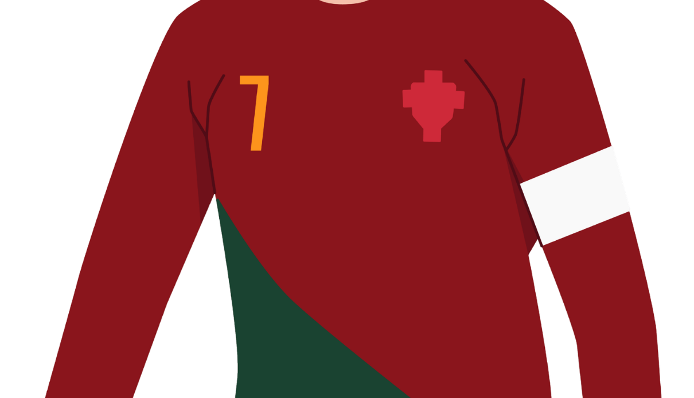
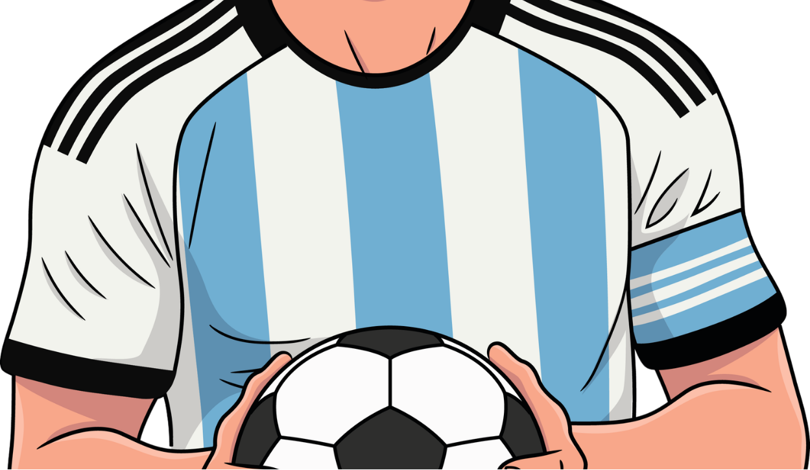

MODO ONLINE
Dispute partidas no modo offline pra resgatar fichas de jogo e enfrentar jogadores no modo competitivo.

X1 CASUAL
Desafie o seu amigo para um x1
ENTRAR
TORNEIO CASUAL
Dispute um torneio mata-mata com seus amigos
ENTRARCOMPETITIVO
 3.000 FICHAS 1.000
3.000 FICHAS 1.000X1 casual disponível em uma tela exclusiva para testes com duas contas. Torneio casual em testes e competitivo em implementação.
Três formas de jogar
O HAT-TRICK d'OR está preparando três experiências multiplayer: X1 casual, torneio casual e torneio competitivo. O X1 está em testes, e os campeonatos estão sendo integrados e validados.
X1 casual
Partida gratuita entre duas pessoas. O anfitrião cria uma sala e compartilha um código ou link de convite. O código poderá ser ocultado na tela para evitar exposição acidental. A partida não concede fichas, não oferece premiação e não entra no histórico competitivo. Os dois jogadores precisarão confirmar em Estou pronto.
Torneio casual
Chave eliminatória para até 16 equipes, criada por um anfitrião. A sala terá código e link compartilháveis, com opção de ocultar o código. O anfitrião poderá iniciar com menos de 16 participantes; as vagas restantes serão preenchidas pela CPU. Não haverá custo de entrada, fichas ou premiação.
Torneio competitivo
Entrada prevista: 1.000 fichas por participante.
Troféu acumulativo exclusivo do competitivo.
Campeonato exclusivo para 16 jogadores humanos, organizados automaticamente em uma chave eliminatória. A entrada planejada será de 1.000 fichas por jogador. O campeão receberá 3.000 fichas, uma box especial com cartas Lendárias ou superiores e um título no troféu acumulativo Campeão de Tudo.
O troféu integra a coleção de troféus na página de Conquistas e seu contador aumentará a cada campeonato conquistado. O torneio começa quando as 16 vagas estiverem preenchidas; a presença é confirmada antes de cada confronto.
Como conquistar fichas
As fichas serão conquistadas no modo offline, avançando na campanha contra a CPU:
- Passou das oitavas: 50 fichas.
- Passou das quartas: 50 fichas.
- Passou da semifinal: 100 fichas.
- Foi campeão: 500 fichas e a box já prevista na campanha.
Uma campanha completa poderá render 700 fichas. As fichas serão virtuais, vinculadas à conta e sem valor monetário.
Identidade nas partidas
As telas multiplayer mostrarão o @usuário e o nome do clube de cada participante quando a funcionalidade estiver disponível. O nome do clube pode se repetir e ser alterado no perfil.

A comemoração também será utilizada na tela de vitória dos torneios online quando forem implementados.
Preparação e segurança
O multiplayer exige comunicação em tempo real, regras de acesso no banco de dados e validação dos resultados no servidor. A interface e as regras acima descrevem o funcionamento planejado; não significam que as salas ou partidas já estejam disponíveis nesta versão.